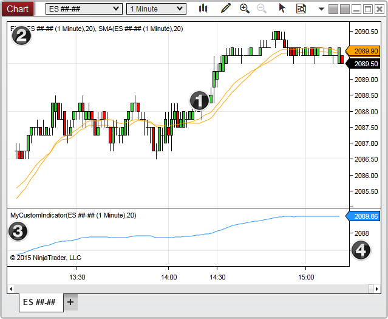

|
<< Click to Display Table of Contents >> Charts |


|
Charts
|
<< Click to Display Table of Contents >> Charts |
|
The following section covers information related to accessing chart related data, such as ChartControl, ChartBars, ChartScales, and ChartPanels, and advanced Indicator Rendering.
1. ChartBars |
The Chart's Primary Data Series which the NinjaScript object is running |
2. ChartControl |
The entire grid hosting the chart including the X-axis, additional panels, and chart related properties |
3. ChartPanel |
The Panel that the indicator object is running |
4. ChartScale |
The Y-axis of the indicator object's panel |
A chart's objects can be broken down into the four following areas:
